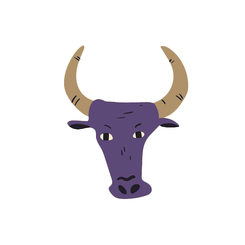

Magaskopet
Generelt
Se også generelle studietips her
Studietips
Da tyren er praktisk, tålmodig og elsker
komfort, er det vigtigt at skabe et studieområde, der appellerer til dine sanser – bløde puder,
en behagelig stol og måske en duftende plante eller duftlys. Når du har det
behageligt, bliver du langt mere produktiv.
Tyren kan lide rutiner og struktur. Lav en fast tidsplan, hvor du dedikerer
bestemte tidspunkter til studie og pauser. Det hjælper dig med at opretholde
fokus uden at føle dig presset.
Du nyder også belønning, så når du når dine studie-mål, kan du belønne dig
selv med noget godt – en lækker snack eller et lille break med musik eller en bog.
Det gør studietiden mere motiverende og tilfredsstillende.

Tyren
20. april - 20. maj